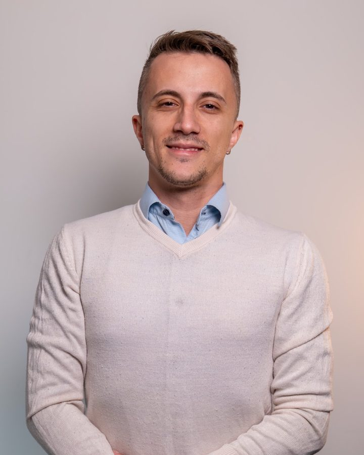

IT Manager / Head de TI
Gestão de TI que transforma estratégia em operação estável, medida e melhorada continuamente.
ParaVagas de IT Manager, Head de TI e coordenação
jlima.tec.br/cv/manager · joao.lima@jlima.tec.br · +55 (12) 98149-4017 · linkedin.com/in/jpgdelima

Uma área de TI bem gerida é previsível: sabe o que entrega, quanto custa e como melhora. Planejo, construo, entrego e opero a partir das definições da governança, com processos, indicadores e times que sustentam o resultado no dia a dia.
Gestão de serviços
Catálogo, SLAs, central de serviços e gestão de incidentes, problemas e mudanças.
Indicadores e desempenho
KPIs, NPS e relatórios executivos que mostram valor e orientam melhorias.
Pessoas e times
Estrutura, papéis, capacitação e liderança de equipes técnicas multidisciplinares.
Riscos e continuidade
Gestão de riscos, continuidade de negócio e recuperação de desastres.
Executivas
Técnicas
CTO & Strategic Advisor
Integrador de Soluções Governamentais · 2022 → hojeGestão de TI e de serviços gerenciados, com 35 mil tickets e NPS médio de 4,8 de 5,0. Atendimento a mais de 150 organizações.
Head of CSC & Delivery Services
Integrador de Cibersegurança · 2022 → hojeLiderança da unidade de Delivery & Managed Services, gestão de projetos e expansão do portfólio de serviços.
Head de Engenharia de Pré-Venda e Arquitetura de Soluções
Distribuidor de Soluções · 2024 → hojeEstruturação de área com baseline, processos, prazo de resposta e padronização de ferramentas.
chamados com NPS 4,7–4,8 de 5,0
de disponibilidade em 3 anos (varejo)
colaboradores em 2 anos
projetos entregues em 24 meses
Frameworks e certificações
ITIL · HDI · ISO/IEC 20000 · COBIT · PMBOK · Scrum · PDCA, DMAIC e Kaizen
Formatos de contratação
CLT executivo · PJ · Fractional (part-time) · Projeto com escopo fechado · Retainer mensal · Conselho consultivo